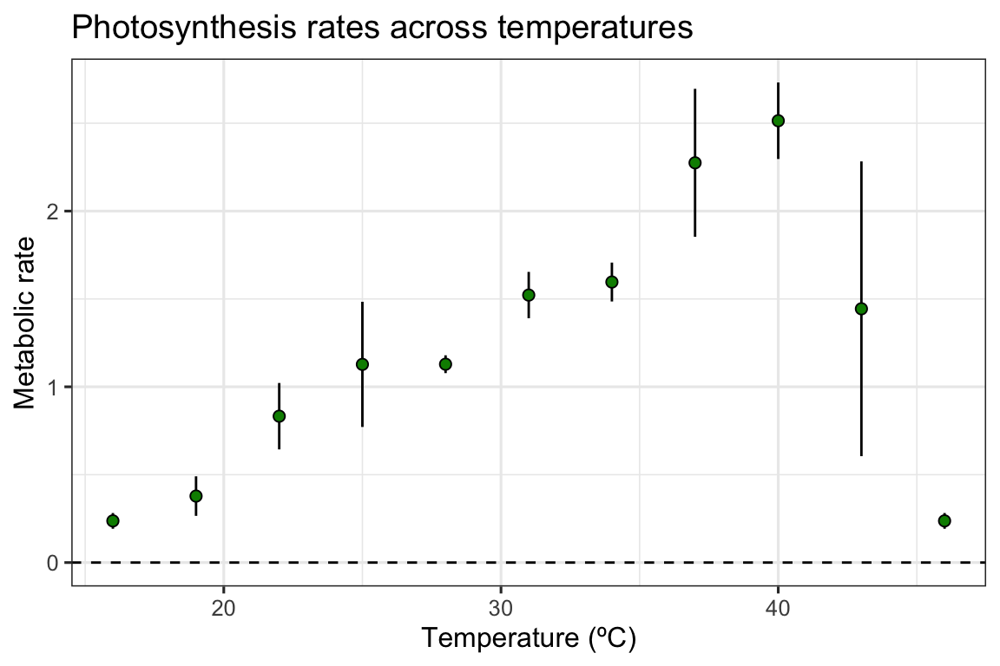
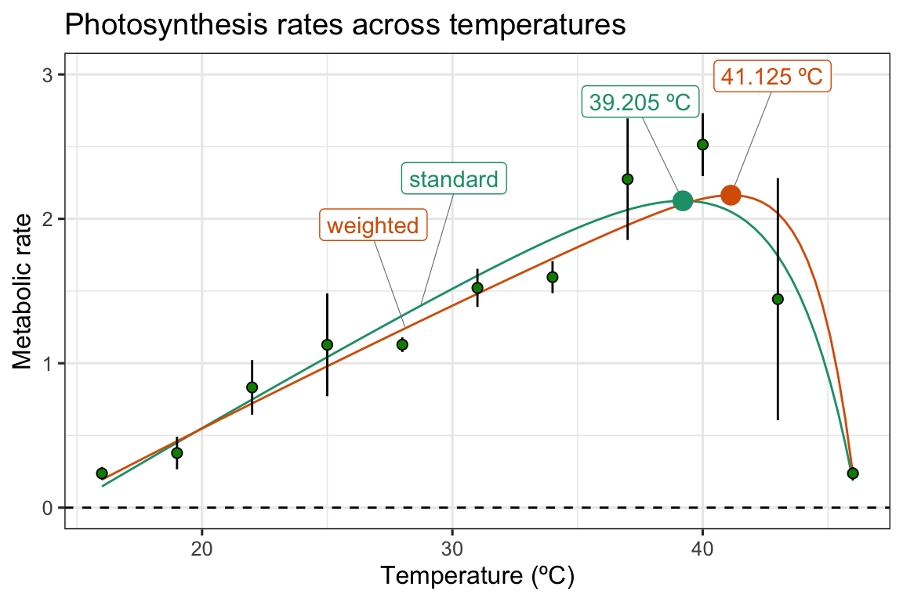

vignettes/model_weighting.Rmd
model_weighting.Rmd# load packages library(rTPC) library(nls.multstart) library(broom) library(tidyverse) library(ggrepel)
The general pipeline demonstrates how models can be fitted, parameters extracted, and predictions plotted to single or multiple curves using functions in rTPC, nls_multstart(), and purrr.
Here, we demonstrate how this pipeline can easily be extended to incorporate measurement uncertainty by using the weights argument of nls_multstart(). Methods of fitting TPCs in the literature often fit models to averaged rate values at each temperature. This fits a model on the mean rate value, but often the variation around this calculated mean value is ignored. However, there may be more spread in the rate data at the extreme temperatures (very hot or very cold). Ignoring the homoscedasticity in the data may alter the model fit.
Instead, we can incorporate measurement uncertainty using the weights argument within nls_multstart(), to perform a weighted non-linear least squares regression. The optimal weight for each data point is the standard deviation, \(1/\sigma\), which easily be calculated when averaging over technical or biological replicates.
We can demonstrate weighted non-linear least squares regression by using the example dataset contained within rTPC - a dataset of 60 TPCs of respiration and photosynthesis of the aquatic algae, Chlorella vulgaris. Instead of plotting a single curve, we average over the biological replicates, rep, within a growth temperature, to get mean rate values at each assay temperature and their standard deviation. These are then plotted using ggplot2.
# get curve data data("chlorella_tpc") d_ave <- filter(chlorella_tpc, process == 'adaptation', growth_temp == 33, flux == 'photosynthesis') %>% group_by(temp, flux) %>% summarise(., sd = sd(rate), ave_rate = mean(rate)) %>% ungroup() #> `summarise()` regrouping output by 'temp' (override with `.groups` argument) # plot ggplot() + geom_linerange(aes(x = temp, ymin = ave_rate - sd, ymax = ave_rate + sd), d_ave) + geom_point(aes(temp, ave_rate), d_ave, size = 2, shape = 21, fill = 'green4') + theme_bw(base_size = 12) + theme(legend.position = 'none', strip.text = element_text(hjust = 0), strip.background = element_blank()) + labs(x ='Temperature (ºC)', y = 'Metabolic rate', title = 'Photosynthesis rates across temperatures') + geom_hline(aes(yintercept = 0), linetype = 2)

In this example, the standard deviation in our rates are actually smallest at the extreme temperatures, counter to what we previously expected.
We will use the workflows outlined in the previous vignettes on fitting many models and fitting many curves to fit both weighted and standard non-linear least squares regression, and we will use the kamykowski_1985() in this example - purely because it has not been used in previous vignettes as of yet.
# fit kamykowski model using rTPC with and without weights d_fits <- nest(d_ave, data = c(temp, ave_rate, sd)) %>% mutate(standard = map(data, ~nls_multstart(ave_rate~kamykowski_1985(temp = temp, tmin, tmax, a,b,c), data = .x, iter = c(4,4,4,4,4), start_lower = get_start_vals(.x$temp, .x$ave_rate, model_name = 'kamykowski_1985') - 10, start_upper = get_start_vals(.x$temp, .x$ave_rate, model_name = 'kamykowski_1985') + 10, lower = get_lower_lims(.x$temp, .x$ave_rate, model_name = 'kamykowski_1985'), upper = get_upper_lims(.x$temp, .x$ave_rate, model_name = 'kamykowski_1985'), supp_errors = 'Y', convergence_count = FALSE)), weighted = map(data, ~nls_multstart(ave_rate~kamykowski_1985(temp = temp, tmin, tmax, a,b,c), data = .x, iter = c(4,4,4,4,4), start_lower = get_start_vals(.x$temp, .x$ave_rate, model_name = 'kamykowski_1985') - 10, start_upper = get_start_vals(.x$temp, .x$ave_rate, model_name = 'kamykowski_1985') + 10, lower = get_lower_lims(.x$temp, .x$ave_rate, model_name = 'kamykowski_1985'), upper = get_upper_lims(.x$temp, .x$ave_rate, model_name = 'kamykowski_1985'), supp_errors = 'Y', convergence_count = FALSE, # include weights here! modelweights = 1/sd))) d_fits #> # A tibble: 1 x 4 #> flux data standard weighted #> <chr> <list> <list> <list> #> 1 photosynthesis <tibble [11 × 3]> <nls> <nls>
We can then get the predictions and plot them as before.
# stack models d_stack <- select(d_fits, -data) %>% pivot_longer(., names_to = 'model_name', values_to = 'fit', standard:weighted) # get predictions using augment newdata <- tibble(temp = seq(min(d_ave$temp), max(d_ave$temp), length.out = 100)) d_preds <- d_stack %>% mutate(., preds = map(fit, augment, newdata = newdata)) %>% select(-fit) %>% unnest(preds) # take a random point from each model for labelling d_labs <- filter(d_preds, temp < 30) %>% group_by(., model_name) %>% sample_n(., 1) %>% ungroup() # get topt for each model d_topt <- mutate(d_stack, topt = map_dbl(fit, get_topt), rmax = map_dbl(fit, get_rmax), topt_text = paste(topt, 'ºC', sep = ' ')) # plot ggplot(d_preds) + geom_line(aes(temp, .fitted, col = model_name)) + geom_label_repel(aes(temp, .fitted, label = model_name, col = model_name), fill = 'white', nudge_y = 0.8, segment.size = 0.2, segment.colour = 'grey50', d_labs) + geom_linerange(aes(x = temp, ymin = ave_rate - sd, ymax = ave_rate + sd), d_ave) + geom_point(aes(temp, ave_rate), d_ave, size = 2, shape = 21, fill = 'green4') + geom_label_repel(aes(topt, rmax, label = topt_text, col = model_name), fill = 'white', nudge_y = 0.8, segment.size = 0.2, segment.colour = 'grey50', d_topt) + geom_point(aes(topt, rmax, col = model_name), size = 4, d_topt) + theme_bw(base_size = 12) + theme(legend.position = 'none') + labs(x = 'Temperature (ºC)', y = 'Metabolic rate', title = 'Photosynthesis rates across temperatures') + geom_hline(aes(yintercept = 0), linetype = 2) + scale_color_brewer(type = 'qual', palette = 2) + ylim(c(0, 3))

Here, we can see that weighting the regression by the standard deviation of the average rate value at each temperature increases the optimum temperature by approximately 2 ºC. This is a big relative shift, and could have big consequences for any downstream analyses that might be applied. The model weighting approach can easily be combined with model selection/averaging.